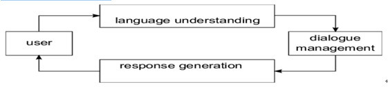

ChatBot
Tang poetry has become the treasure of Chinese traditional literature. So I want to develop a chatbot to introduce famous Tang poetry and poets to foreign friends who want to understand Chinese traditional culture. Tang Dynasty is a golden age for the development of Chinese poetry. There are a huge number of Tang poetry and many outstanding poets were born. I have defined 3 user intents for my chatbot.
Famous Poetry:Introduce the 50 most famous Tang poems.
Famous Poet:Introduce five most famous poets and their representative works.
Season Poetry: Appreciate the beauty of the four seasons in Tang poetry.
This is a text-based chatbot, I use a very popular structure which is decomposed into three major Components: Language Understanding, Dialogue Management, Response Generation. Scope the components clearly, so I can focus on each components task.
Language Understanding:Count keywords to identify user intent, required information and optional information. Extract needed information from the user message and put the extracted information to the Hash Table.
Dialogue Management:Based on value extracted from the hash table to decide what should I ask for the missing information or what should I answer.
Response Generation:Based on conversational action returned from dialogue manager to produce the valid responses in this situation.
This is a Java application running on NetBeans IDE. Download the Source Code for the detailed information.